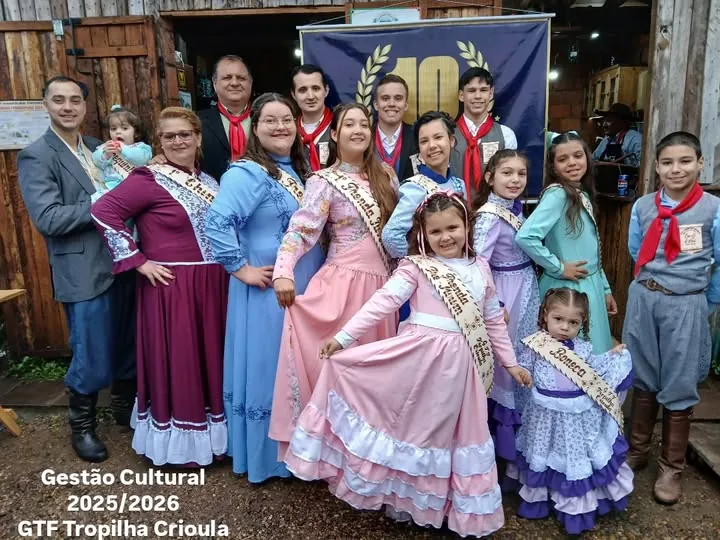

Nossos Departamentos
Depto. Cultural
Prendas e peões que lideram as ações culturais e representam o Tropilha.
Quem somos
Cultura gaúcha vivida no galpão

O Depto. Cultural reúne as prendas e os peões que representam o Tropilha. A cada gestão são escolhidas as Prendas de Faixa e os Peões de Crachá (gestões 2023/24 e 2025/26).
O departamento cuida das oficinas de chimarrão e indumentária, prepara a participação nos concursos culturais e mantém viva, toda semana, a conversa sobre a nossa tradição.
Neste departamento
Subseção
Gestões Culturais
Ações
O que o Cultural faz
Concurso Cultural
1º lugar no Concurso Cultural da 44ª Semana Farroupilha (2025) e bicampeão na 45ª edição (2026). Em junho de 2026 houve o Concurso Cultural Interno, com mostras culturais.
Semana Farroupilha
Desde 2023 o Tropilha integra a Coordenação Artística da Semana Farroupilha de Sapucaia do Sul, com galpão aberto no Parque Jayme Caetano Braun.
Indumentária
Palestra aberta à comunidade sobre a história e o uso da pilcha, Traje de Honra do RS (Lei nº 8.813/1989), em abril de 2024.
Chama Crioula
Participação na recepção da Chama Crioula, símbolo dos festejos farroupilhas.
Grupo de Estudos
Cinco encontros de 29/11/2026 a 30/05/2027: Carta de Princípios do MTG, o sentido e o valor do Tradicionalismo, seu alcance social, MTG organizado e gestão de entidade.
Gestões Culturais
Prendas e peões escolhidos a cada gestão para representar o Tropilha em eventos e concursos.
Subseção
Teses e Documentos
Projeto permanente
10 Minutos de Cultura
Nas jantas de sexta-feira, antes de a comida ser servida, alguém apresenta em 10 minutos um tema da cultura gaúcha. Em 2026, os participantes do Concurso Cultural de junho estão reapresentando as suas mostras culturais para quem está no galpão.
2026
Novembro
10 Minutos de Cultura de 13/11
13/11/202610 Minutos de Cultura de 06/11
06/11/2026
Outubro
Lendas
Apresentação: 2º Peão (@klint.bzl) · 02/10/2026
Setembro
A Pilcha Masculina
Apresentação: 1º Peão (@andersonfariass._) · 04/09/2026
Agosto
O Povo Charrua
Apresentação: @jose.ernanii · 21/08/2026A arte do Macramê e a Cultura Gaúcha
Apresentação: @burzlaffbertalemes · 14/08/202610 Minutos de Cultura de 07/08
Apresentação: 1ª Prenda Mirim (@laurasmaciel031) · 07/08/2026
Julho
10 Minutos de Cultura de 31/07
Apresentação: Pyetra Robalos, 2ª Prenda Mirim · 31/07/2026


Participe
Fale com a gente
Informações, inscrições e voluntariado pelo WhatsApp (51) 98088-1334 ou pelo e-mail gtftropilhacrioula@gmail.com.